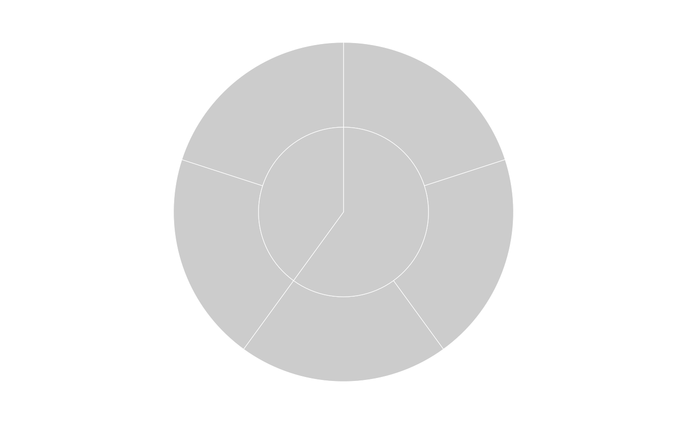
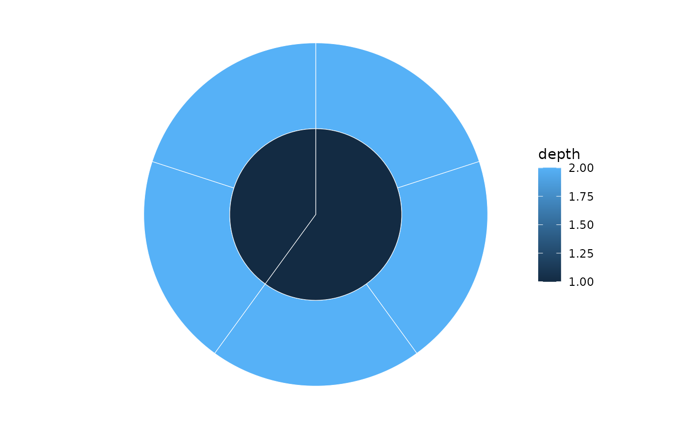

Creates a sunburst (radial) plot from a sunburst_data object using
ggplot2::geom_rect() with coord_polar() and theme_void().
Usage
sunburst(
sb,
fill = NULL,
colour = "white",
linewidth = 0.2,
show_labels = FALSE,
show_node_labels = FALSE,
label_type = c("radial", "perpendicular"),
label_size = 3,
min_label_angle = 0,
label_repel = FALSE,
...
)Arguments
- sb
A
sunburst_dataobject fromsunburst_data().- fill
Fill mapping. Accepts bare names or strings. One of:
NULL(default): static grey fill (no aesthetic mapping)."auto": maps fill to thedepthcolumn."none": explicit static grey fill (same asNULL).A column name: either bare (
fill = depth) or quoted (fill = "depth").
- colour
Border colour for rectangles. Default
"white".- linewidth
Border line width. Default
0.2.- show_labels
Whether to add text labels for leaf nodes. Default
FALSE.- show_node_labels
Whether to add text labels for internal nodes. Only takes effect when
show_labels = TRUE. DefaultFALSE.- label_type
Label orientation.
"radial": text reads outward."perpendicular": text follows the arc.- label_size
Text size for labels. Default
3.- min_label_angle
Minimum angular extent (degrees) for a node to receive a label. Nodes with
delta_angle < min_label_angleare not labelled. Default0(no filtering).- label_repel
Not supported for sunburst plots. Use
icicle()for label repulsion, ormin_label_angleto reduce label clutter on sunbursts. DefaultFALSE.- ...
Passed to
geom_rect().
Examples
sb <- sunburst_data("((a, b, c), (d, e));")
sunburst(sb)

sunburst(sb, fill = "depth")

sunburst(sb, show_labels = TRUE, label_type = "perpendicular")